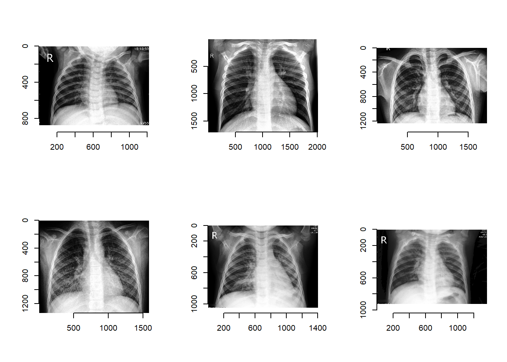
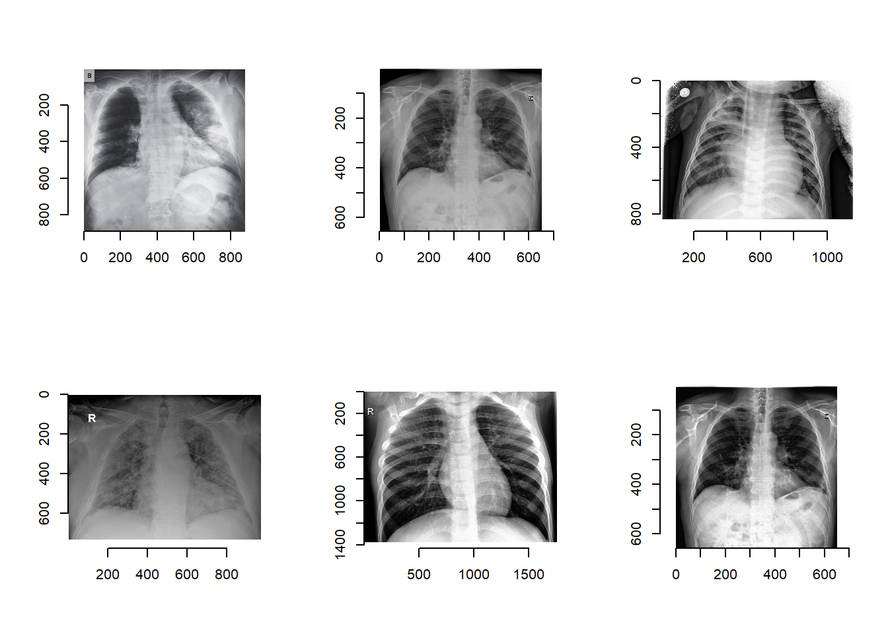
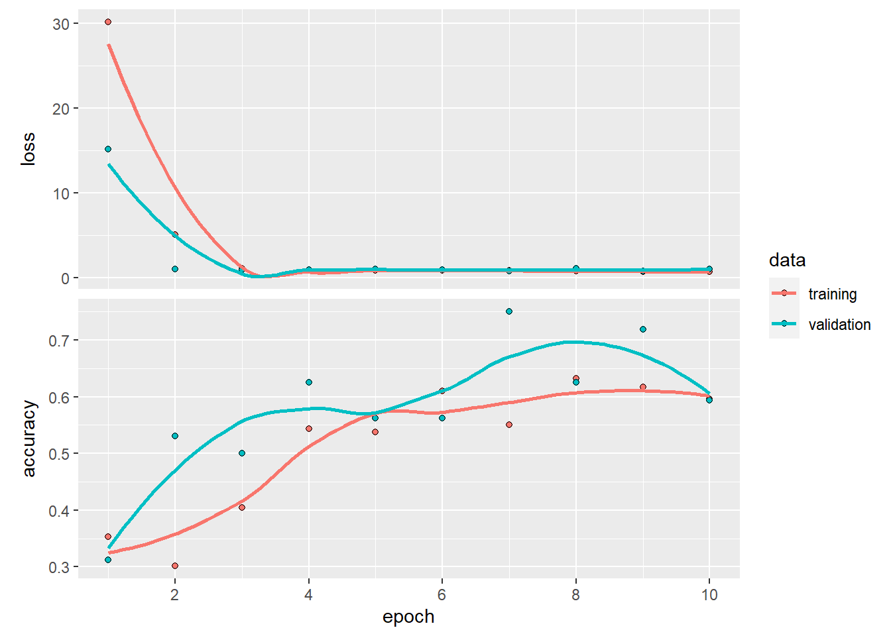

Neural Network
Dwi Retno
2022-06-30
Pada kasus ini akan menggunakan image classification untuk mengklasifikasikan gambar x-ray dari pasien yang terkena covid, pneumonia dan juga pasien normal.
Load Library
Library yang akan digunakan pada kasus ini adalah tidyverse untuk data wrangling, imager untuk image manipulation , keras untuk deep learning, caret untuk model evaluation.
library(keras)
library(tensorflow)
library(tidyverse)## -- Attaching packages --------------------------------------- tidyverse 1.3.1 --## v ggplot2 3.3.6 v purrr 0.3.4
## v tibble 3.1.7 v dplyr 1.0.9
## v tidyr 1.2.0 v stringr 1.4.0
## v readr 2.1.2 v forcats 0.5.1## -- Conflicts ------------------------------------------ tidyverse_conflicts() --
## x dplyr::filter() masks stats::filter()
## x dplyr::lag() masks stats::lag()use_condaenv("r-tensorflow")
library(keras)
library(imager)## Loading required package: magrittr##
## Attaching package: 'magrittr'## The following object is masked from 'package:purrr':
##
## set_names## The following object is masked from 'package:tidyr':
##
## extract##
## Attaching package: 'imager'## The following object is masked from 'package:magrittr':
##
## add## The following object is masked from 'package:stringr':
##
## boundary## The following object is masked from 'package:tidyr':
##
## fill## The following objects are masked from 'package:stats':
##
## convolve, spectrum## The following object is masked from 'package:graphics':
##
## frame## The following object is masked from 'package:base':
##
## save.imagelibrary(caret)## Loading required package: lattice##
## Attaching package: 'caret'## The following object is masked from 'package:purrr':
##
## lift## The following object is masked from 'package:tensorflow':
##
## trainlibrary(grid)##
## Attaching package: 'grid'## The following object is masked from 'package:imager':
##
## depthlibrary(gridExtra)##
## Attaching package: 'gridExtra'## The following object is masked from 'package:dplyr':
##
## combineObjek folder_train berisi nama folder yang ada pada folder train yang berisi nama label kita yaitu covid, normal, pneumonia.
folder_train <- list.files("Covid19-dataset/train/")
folder_train## [1] "covid" "normal" "pneumonia"Folder nama tersebut akan dikombinasikan dengan path atau direktori dari folder train sehingga kita bisa mengakses isi didalam setiap folder.
folder_path <- paste0("Covid19-dataset/train/", folder_train, "/")
folder_path## [1] "Covid19-dataset/train/covid/" "Covid19-dataset/train/normal/"
## [3] "Covid19-dataset/train/pneumonia/"menggunakan fungsi map() untuk loop dan mengumpulkan nama file dari tiap folder dan akan menggembalikan berupa list.Jika ingin mengkombinasikan file nama dari 3 folder berbeda dapat menggunakan unlist()
file_name_train <- map(folder_path, function(x) paste0(x, list.files(x))) %>%
unlist()
head(file_name_train)## [1] "Covid19-dataset/train/covid/Covid01.jpeg"
## [2] "Covid19-dataset/train/covid/Covid010.jpeg"
## [3] "Covid19-dataset/train/covid/Covid012.jpeg"
## [4] "Covid19-dataset/train/covid/Covid015.jpeg"
## [5] "Covid19-dataset/train/covid/Covid019.jpeg"
## [6] "Covid19-dataset/train/covid/Covid02.jpeg"Berikut ini adalah data terbawah dari train kita.
tail(file_name_train)## [1] "Covid19-dataset/train/pneumonia/Pneumonia 3 (68).jpeg"
## [2] "Covid19-dataset/train/pneumonia/Pneumonia 3 (69).jpeg"
## [3] "Covid19-dataset/train/pneumonia/Pneumonia 3 (7).jpeg"
## [4] "Covid19-dataset/train/pneumonia/Pneumonia 3 (70).jpeg"
## [5] "Covid19-dataset/train/pneumonia/Pneumonia 3 (8).jpeg"
## [6] "Covid19-dataset/train/pneumonia/Pneumonia 3 (9).jpeg"Jumlah gambar dari folder train (covid, normal, pneumonia) sejumlah 210 gambar.
length(file_name_train)## [1] 210# Random pilih gambar
set.seed(100)
sample_image_train <- sample(file_name_train,6)
# load image ke R
img_train <- map(sample_image_train, load.image)
# Buat skolase foto grid 2x3
par(mfrow = c(2,3))
map(img_train, plot)
## [[1]]
## Image. Width: 1216 pix Height: 872 pix Depth: 1 Colour channels: 3
##
## [[2]]
## Image. Width: 2010 pix Height: 1705 pix Depth: 1 Colour channels: 3
##
## [[3]]
## Image. Width: 1803 pix Height: 1238 pix Depth: 1 Colour channels: 3
##
## [[4]]
## Image. Width: 1582 pix Height: 1333 pix Depth: 1 Colour channels: 3
##
## [[5]]
## Image. Width: 1400 pix Height: 1048 pix Depth: 1 Colour channels: 3
##
## [[6]]
## Image. Width: 1360 pix Height: 920 pix Depth: 1 Colour channels: 3dim(load.image(file_name_train[1]))## [1] 4248 3480 1 3Function dibawah untuk mendapatkan informasi dimensi height dan weight serta nama file data train dibawah.
# Function for acquiring width and height of an image
get_dim <- function(x){
img <- load.image(x)
df_img <- data.frame(height = height(img),
width = width(img),
filename = x
)
return(df_img)
}
get_dim(file_name_train[1])# Randomly get 50 sample images
set.seed(100)
sample_file <- sample(file_name_train, 100)
# Run the get_dim() function for each image
file_dim <- map_df(sample_file, get_dim)
head(file_dim, 10)summary(file_dim)## height width filename
## Min. : 391 Min. : 439 Length:100
## 1st Qu.:1010 1st Qu.:1342 Class :character
## Median :1370 Median :1632 Mode :character
## Mean :1420 Mean :1724
## 3rd Qu.:1768 3rd Qu.:2033
## Max. :2840 Max. :2972folder_list_test <- list.files("Covid19-dataset/test/")
folder_path_test <- paste0("Covid19-dataset/test/", folder_list_test, "/")
file_name_test <- map(folder_path_test,
function(x) paste0(x, list.files(x))) %>%
unlist()
# 6 data teratas
tail(file_name_test)## [1] "Covid19-dataset/test/test/PN 0101 (7).jpeg"
## [2] "Covid19-dataset/test/test/PN 0101 (8).jpeg"
## [3] "Covid19-dataset/test/test/PN 0101 (9).jpeg"
## [4] "Covid19-dataset/test/test/radiopaedia-2019-novel-coronavirus-infected-pneumonia.jpeg"
## [5] "Covid19-dataset/test/test/Vietnam_coronavirus.jpeg"
## [6] "Covid19-dataset/test/test/x-ray_coronavirus_US.jpeg"# Random pilih gambar
set.seed(100)
sample_image_test <- sample(file_name_test, 6)
# load image ke R
img_test <- map(sample_image_test, load.image)
# Buat skolase foto grid 2x3
par(mfrow = c(2,3))
map(img_test, plot)
## [[1]]
## Image. Width: 880 pix Height: 891 pix Depth: 1 Colour channels: 3
##
## [[2]]
## Image. Width: 651 pix Height: 655 pix Depth: 1 Colour channels: 1
##
## [[3]]
## Image. Width: 1152 pix Height: 832 pix Depth: 1 Colour channels: 3
##
## [[4]]
## Image. Width: 972 pix Height: 733 pix Depth: 1 Colour channels: 1
##
## [[5]]
## Image. Width: 1754 pix Height: 1377 pix Depth: 1 Colour channels: 3
##
## [[6]]
## Image. Width: 651 pix Height: 659 pix Depth: 1 Colour channels: 3get_dim <- function(x){
img <- load.image(x)
df_img <- data.frame(height = height(img),
width = width(img),
filename = x)
return(df_img)
}
get_dim(file_name_test[1])set.seed(100)
sample_file_test <- sample(file_name_test)
file_dim_test <- map_df(sample_file_test, get_dim)
head(file_dim_test, 10)summary(file_dim)## height width filename
## Min. : 391 Min. : 439 Length:100
## 1st Qu.:1010 1st Qu.:1342 Class :character
## Median :1370 Median :1632 Mode :character
## Mean :1420 Mean :1724
## 3rd Qu.:1768 3rd Qu.:2033
## Max. :2840 Max. :2972Pada data train memiliki dimensi height terkecil sebesar 391 dan height terbesar sebesar 2840, dan width terkecil sebesar 439 dan terbesar sebesar 2972.Data test memiliki data height dan width yang beragam yaitu masing-masing ukuran besar 2166 & 2352 serta height width kecil sebesar 341 & 416.
summary(file_dim_test)## height width filename
## Min. : 341.0 Min. : 416 Length:66
## 1st Qu.: 813.8 1st Qu.: 972 Class :character
## Median : 888.0 Median :1223 Mode :character
## Mean :1021.8 Mean :1269
## 3rd Qu.:1363.2 3rd Qu.:1751
## Max. :2166.0 Max. :2352Semakin dimensi gambar yang digunakan untuk training lebih besar maka informasi nya banyak tapi waktu untuk trainingnya lama, kalau terlalu kecil maka makin banyak informasi yang hilang dari gambarnya.
Data Prepocessing
target_size <- c(200,200)
batch_size <- 32Dibagian function image_data_generator data asli akan dijadikan beberapa variasi.Data akan di rescale jadi skala data menjadi 0 dan 1, data akan di flip secara horizontal dan vertical, dan data akan di rotate dengan 45 derajat serta di zoom sebesar 0.25.Serta membagi data validasi sebesar 20%.
# Image Generator
train_data_gen <- image_data_generator(rescale = 1./255, # Scaling pixel value
horizontal_flip = T, # Flip image horizontally
vertical_flip = T, # Flip image vertically
rotation_range = 45, # Rotate image from 0 to 45 degrees
zoom_range = 0.25, # Zoom in or zoom out range
validation_split = 0.2 # 20% data as validation data
)## Loaded Tensorflow version 2.9.1Kita dapat menggunakan function flow_images_from_directory dari library keras untuk menghasilkan kumpulan data dari gambar dalam direktori dengan data tambahan yang sudah di augmentasi.Kita akan menggunakan color_mode nya RGB.
Pembagian kelas training dan validasi sebesar 80:20.Kita harus membagi data antara data train dan validasi untuk mencegah model dari overfitting (bagus di data train dan buruk saat di test) dan untuk meningkatkan kemampuan model dalam menggeneralisasi gambar.Jadi data yang dipakai untuk mengetest gambar bukanlah gambar yang sama dengan gambar yang akan digunakan untuk train.
# Training Dataset
train_image_array_gen <- flow_images_from_directory(directory = "Covid19-dataset/train/", # Folder of the data
target_size = target_size, # target of the image dimension (64 x 64)
color_mode = "rgb", # use RGB color
batch_size = batch_size ,
seed = 100, # set random seed
subset = "training", # declare that this is for training data
generator = train_data_gen
)
# Validation Dataset
val_image_array_gen <- flow_images_from_directory(directory = "Covid19-dataset/train/",
target_size = target_size,
color_mode = "rgb",
batch_size = batch_size ,
seed = 100,
subset = "validation", # declare that this is the validation data
generator = train_data_gen
)# Number of training samples
train_samples <- train_image_array_gen$n
# Number of validation samples
valid_samples <- val_image_array_gen$n
# Number of target classes/categories
output_n <- n_distinct(train_image_array_gen$classes)
# Get the class proportion
table("\nFrequency" = factor(train_image_array_gen$classes)
) %>%
prop.table()##
## Frequency
## 0 1 2
## 0.3333333 0.3333333 0.3333333Proporsi kelas covid, normal, dan pneumonia (0.33) dapat dilhat jika masing-masing kelas proporsinya seimbang.Efek jika ada kelas yang imbalance adalah mempengaruhi performa model dan mempengaruhi nilai akurasi serta metriks lainnya.
# input shape of the image
c(target_size, 3) ## [1] 200 200 3# Image Generator
test_data_gen <- image_data_generator(rescale = 1./255, # Scaling pixel value
horizontal_flip = T, # Flip image horizontally
vertical_flip = T, # Flip image vertically
rotation_range = 45, # Rotate image from 0 to 45 degrees
zoom_range = 0.25, # Zoom in or zoom out range
)Melakukan augmentasi pada data test agar input data dari test set sama seperti yang sudah dilakukan pada data train.Contohnya seperti image cropping, yang kita lakukan di training set juga akan dilakukan di data test agar mereka memiliki ukuran yang sama.Pada data test juga kita akan menggunakan color_mode RGB.
test_image_array_gen <- flow_images_from_directory(directory = "Covid19-dataset/test/",
target_size = target_size,
color_mode = "rgb",
batch_size = batch_size,
seed = 100,
generator = test_data_gen
)Pada pembuatan model dibawah akan menggunakan concolutional layer sebanyak 1 layer dan untuk model big tuning sebanyak 5 layer.Menggunakan flatten layer yang sebagai proses untuk mengkonversi semua yang dihasilkan dari 2D array dari fitur pool kedalam suatu single vektor linear.Activation output menggunakan softmax karena klasifikasi multiclass.
Model Architecture
# Set Initial Random Weight
tensorflow::tf$random$set_seed(100)
model <- keras_model_sequential(name = "simple_model") %>%
# Convolution Layer
layer_conv_2d(filters = 16,
kernel_size = c(3,3),
padding = "same",
activation = "relu",
input_shape = c(target_size, 3)
) %>%
# Max Pooling Layer
layer_max_pooling_2d(pool_size = c(2,2)) %>%
# Flattening Layer
layer_flatten() %>%
# Dense Layer
layer_dense(units = 16,
activation = "relu") %>%
# Output Layer
layer_dense(units = output_n,
activation = "softmax",
name = "Output")
model## Model: "simple_model"
## ________________________________________________________________________________
## Layer (type) Output Shape Param #
## ================================================================================
## conv2d (Conv2D) (None, 200, 200, 16) 448
## max_pooling2d (MaxPooling2D) (None, 100, 100, 16) 0
## flatten (Flatten) (None, 160000) 0
## dense (Dense) (None, 16) 2560016
## Output (Dense) (None, 3) 51
## ================================================================================
## Total params: 2,560,515
## Trainable params: 2,560,515
## Non-trainable params: 0
## ________________________________________________________________________________Lost function yang akan digunakan adalah categorical crossentropy.Saya menggunakan adam optimizer dengan learning rate 0,01 untuk model yang simple, tapi kalau yang model yang besar / dituning saya pakai 0,01.Epoch yang saya gunakan untuk train model sejumlah 10.
Pada tahap pembuatan simple_model ini saya menggunakan convolution layer untuk mengekstrak fitur dari 2D menggunakan relu activation function.Max Pooling layer untuk downsample fitur gambar /mengurangi fitur gambar dan dapat mengurangi banyaknya parameter yang belajar.Pooling layer meringkas fitur yang dihasilkan pada convolution layer.
model %>%
compile(
loss = "categorical_crossentropy",
optimizer = optimizer_adam(learning_rate = 0.01),
metrics = "accuracy"
)
# Fit data into model
history <- model %>%
fit(
# training data
train_image_array_gen,
# training epochs
steps_per_epoch = as.integer(train_samples / batch_size),
epochs = 10,
# validation data
validation_data = val_image_array_gen,
validation_steps = as.integer(valid_samples / batch_size)
)
plot(history)
Model Evaluation
val_data <- data.frame(file_name = paste0("Covid19-dataset/train/", val_image_array_gen$filenames)) %>%
mutate(class = str_extract(file_name, "covid|normal|pneumonia"))
tail(val_data, 10)# Function to convert image to array
image_prep <- function(x) {
arrays <- lapply(x, function(path) {
img <- image_load(path, target_size = target_size,
grayscale = F # Set FALSE if image is RGB
)
x <- image_to_array(img)
x <- array_reshape(x, c(1, dim(x)))
x <- x/255 # rescale image pixel
})
do.call(abind::abind, c(arrays, list(along = 1)))
}test_x <- image_prep(val_data$file_name)
# Check dimension of testing data set
dim(test_x)## [1] 42 200 200 3pred_test <- model %>% predict(test_x) %>% k_argmax()
head(pred_test, 10)## tf.Tensor([0 0 0 0 0 0 0 0 0 0], shape=(10), dtype=int64)# Convert encoding to label
decode <- function(x){
case_when(x == 0 ~ "covid",
x == 1 ~ "normal",
x == 2 ~ "pneumonia"
)
}
pred_test <- sapply(pred_test, decode)
head(pred_test, 10)## [1] "covid" "covid" "covid" "covid" "covid" "covid" "covid" "covid" "covid"
## [10] "covid"confusionMatrix(as.factor(pred_test),
as.factor(val_data$class)
)## Warning in levels(reference) != levels(data): longer object length is not a
## multiple of shorter object length## Warning in confusionMatrix.default(as.factor(pred_test),
## as.factor(val_data$class)): Levels are not in the same order for reference and
## data. Refactoring data to match.## Confusion Matrix and Statistics
##
## Reference
## Prediction covid normal pneumonia
## covid 14 13 12
## normal 0 0 0
## pneumonia 0 1 2
##
## Overall Statistics
##
## Accuracy : 0.381
## 95% CI : (0.2357, 0.5436)
## No Information Rate : 0.3333
## P-Value [Acc > NIR] : 0.3071
##
## Kappa : 0.0714
##
## Mcnemar's Test P-Value : 9.537e-06
##
## Statistics by Class:
##
## Class: covid Class: normal Class: pneumonia
## Sensitivity 1.0000 0.0000 0.14286
## Specificity 0.1071 1.0000 0.96429
## Pos Pred Value 0.3590 NaN 0.66667
## Neg Pred Value 1.0000 0.6667 0.69231
## Prevalence 0.3333 0.3333 0.33333
## Detection Rate 0.3333 0.0000 0.04762
## Detection Prevalence 0.9286 0.0000 0.07143
## Balanced Accuracy 0.5536 0.5000 0.55357Dibandingkan dengan model big, model simple cenderung underfitting akurasi sebesar 0.65 karena dari bentuk arsitekturnya terlalu sederhana sehingga model gagal untuk mempelajari dataset.
tensorflow::tf$random$set_seed(100)
model_big <- keras_model_sequential(name = "model_big") %>%
# First convolutional layer
layer_conv_2d(filters = 128,
kernel_size = c(5,5), # 5 x 5 filters
padding = "same",
activation = "relu",
input_shape = c(target_size, 3)
) %>%
# Max pooling layer
layer_max_pooling_2d(pool_size = c(2,2)) %>%
# Second convolutional layer
layer_conv_2d(filters = 64,
kernel_size = c(3,3), # 3 x 3 filters
padding = "same",
activation = "relu"
) %>%
# Max pooling layer
layer_max_pooling_2d(pool_size = c(2,2)) %>%
# Third convolutional layer
layer_conv_2d(filters = 32,
kernel_size = c(5,5),
padding = "same",
activation = "relu"
) %>%
# Max pooling layer
layer_max_pooling_2d(pool_size = c(2,2)) %>%
# Fourth convolutional layer
layer_conv_2d(filters = 64,
kernel_size = c(3,3),
padding = "same",
activation = "relu"
) %>%
# Max pooling layer
layer_max_pooling_2d(pool_size = c(2,2)) %>%
# Fifth convolutional layer
layer_conv_2d(filters = 64,
kernel_size = c(3,3),
padding = "same",
activation = "relu"
) %>%
# Max pooling layer
layer_max_pooling_2d(pool_size = c(2,2)) %>%
# Flattening layer
layer_flatten() %>%
# Dense layer
layer_dense(units = 32,
activation = "relu") %>%
# Output layer
layer_dense(name = "Output",
units = 3,
activation = "softmax")
model_big## Model: "model_big"
## ________________________________________________________________________________
## Layer (type) Output Shape Param #
## ================================================================================
## conv2d_5 (Conv2D) (None, 200, 200, 128) 9728
## max_pooling2d_5 (MaxPooling2D) (None, 100, 100, 128) 0
## conv2d_4 (Conv2D) (None, 100, 100, 64) 73792
## max_pooling2d_4 (MaxPooling2D) (None, 50, 50, 64) 0
## conv2d_3 (Conv2D) (None, 50, 50, 32) 51232
## max_pooling2d_3 (MaxPooling2D) (None, 25, 25, 32) 0
## conv2d_2 (Conv2D) (None, 25, 25, 64) 18496
## max_pooling2d_2 (MaxPooling2D) (None, 12, 12, 64) 0
## conv2d_1 (Conv2D) (None, 12, 12, 64) 36928
## max_pooling2d_1 (MaxPooling2D) (None, 6, 6, 64) 0
## flatten_1 (Flatten) (None, 2304) 0
## dense_1 (Dense) (None, 32) 73760
## Output (Dense) (None, 3) 99
## ================================================================================
## Total params: 264,035
## Trainable params: 264,035
## Non-trainable params: 0
## ________________________________________________________________________________model_big %>%
compile(
loss = "categorical_crossentropy",
optimizer = optimizer_adam(learning_rate = 0.001),
metrics = "accuracy"
)
history <- model_big %>%
fit(
# training data
train_image_array_gen,
# epochs
steps_per_epoch = as.integer(train_samples / batch_size),
epochs = 50,
# validation data
validation_data = val_image_array_gen,
validation_steps = as.integer(valid_samples / batch_size),
# print progress but don't create graphic
verbose = 1,
view_metrics = 0
)
plot(history)
pred_test <- model_big %>% predict(test_x) %>% k_argmax()
head(pred_test, 10)## tf.Tensor([0 0 0 0 1 0 2 2 0 0], shape=(10), dtype=int64)# Convert encoding to label
decode <- function(x){
case_when(x == 0 ~ "covid",
x == 1 ~ "normal",
x == 2 ~ "pneumonia"
)
}
pred_test <- sapply(pred_test, decode)
head(pred_test, 10)## [1] "covid" "covid" "covid" "covid" "normal" "covid"
## [7] "pneumonia" "pneumonia" "covid" "covid"confusionMatrix(as.factor(pred_test),
as.factor(val_data$class)
)## Confusion Matrix and Statistics
##
## Reference
## Prediction covid normal pneumonia
## covid 10 1 0
## normal 2 12 2
## pneumonia 2 1 12
##
## Overall Statistics
##
## Accuracy : 0.8095
## 95% CI : (0.6588, 0.914)
## No Information Rate : 0.3333
## P-Value [Acc > NIR] : 3.11e-10
##
## Kappa : 0.7143
##
## Mcnemar's Test P-Value : 0.4459
##
## Statistics by Class:
##
## Class: covid Class: normal Class: pneumonia
## Sensitivity 0.7143 0.8571 0.8571
## Specificity 0.9643 0.8571 0.8929
## Pos Pred Value 0.9091 0.7500 0.8000
## Neg Pred Value 0.8710 0.9231 0.9259
## Prevalence 0.3333 0.3333 0.3333
## Detection Rate 0.2381 0.2857 0.2857
## Detection Prevalence 0.2619 0.3810 0.3571
## Balanced Accuracy 0.8393 0.8571 0.8750test_data <- data.frame(file_name = paste0("Covid19-dataset/test/", test_image_array_gen$filenames)) %>%
mutate(class = str_extract(file_name, "covid|normal|pneumonia"))
head(test_data, 10)test <- image_prep(test_data$file_name)
# Check dimension of testing data set
dim(test)## [1] 66 200 200 3# Predict label on array
pred_test_new <- model_big %>% predict(test) %>% k_argmax()
# Convert encoding to label
decode <- function(x){
case_when(x == 0 ~ "covid",
x == 1 ~ "normal",
x == 2 ~ "pneumonia"
)
}
pred_test_new <- sapply(pred_test_new, decode)
# check first 3 data
head(pred_test_new, 3)## [1] "covid" "covid" "covid"confusionMatrix(as.factor(pred_test_new),
as.factor(check_data$class)
)## Confusion Matrix and Statistics
##
## Reference
## Prediction covid normal pneumonia
## covid 21 0 3
## normal 4 18 5
## pneumonia 1 2 12
##
## Overall Statistics
##
## Accuracy : 0.7727
## 95% CI : (0.653, 0.8669)
## No Information Rate : 0.3939
## P-Value [Acc > NIR] : 4.185e-10
##
## Kappa : 0.6577
##
## Mcnemar's Test P-Value : 0.09851
##
## Statistics by Class:
##
## Class: covid Class: normal Class: pneumonia
## Sensitivity 0.8077 0.9000 0.6000
## Specificity 0.9250 0.8043 0.9348
## Pos Pred Value 0.8750 0.6667 0.8000
## Neg Pred Value 0.8810 0.9487 0.8431
## Prevalence 0.3939 0.3030 0.3030
## Detection Rate 0.3182 0.2727 0.1818
## Detection Prevalence 0.3636 0.4091 0.2273
## Balanced Accuracy 0.8663 0.8522 0.7674